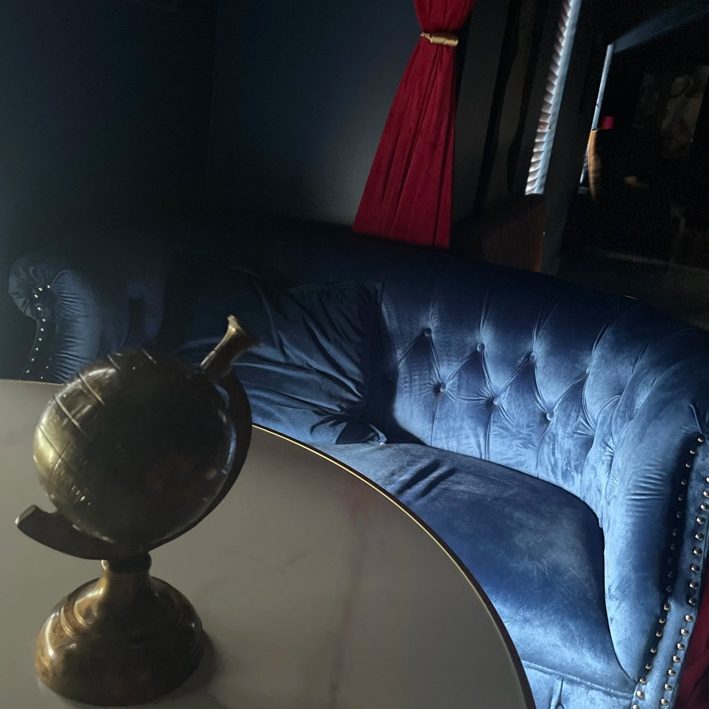
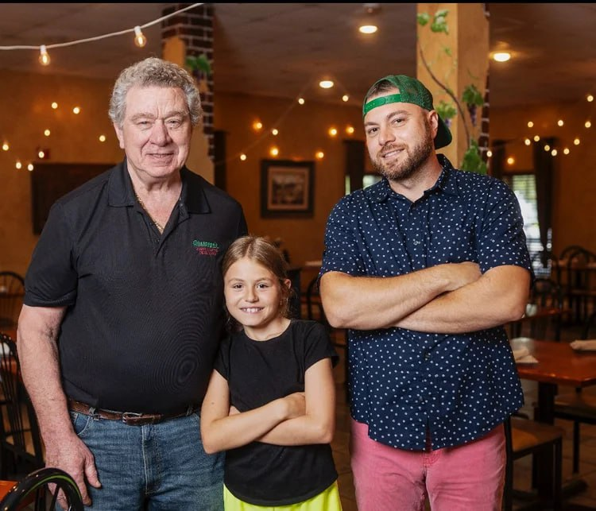

The Teaser
Behind the familiar doors of Giuseppe’s, another world opens after dark. Dopo Ora is a separate concept — intimate, moody, and designed for guests looking for a refined, late-night atmosphere.
Expect curated cocktails, elevated ambiance, and a setting built for conversation, celebration, and memorable nights out.

Joe Russo
Co-creator of the Dopo Ora concept — bringing vision, atmosphere, and detail to the guest experience.

Sal Russo
Co-creator focused on hospitality and execution — shaping a destination that feels exclusive, warm, and unforgettable.
Upcoming Speakeasy Events
Loading events…
Ready to Discover More?
Dopo Ora is intentionally separate from the restaurant experience — by design. Visit the dedicated site for details, booking, and upcoming nights.